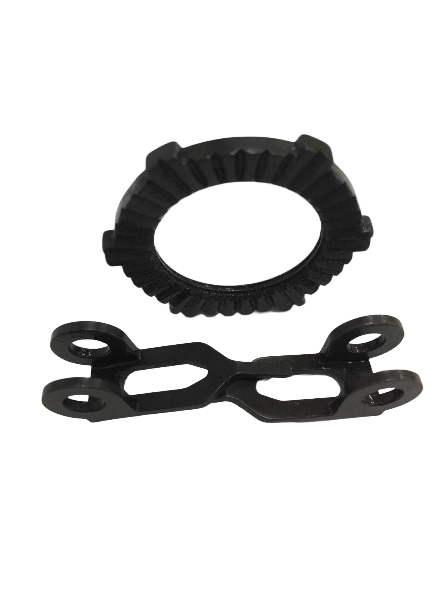
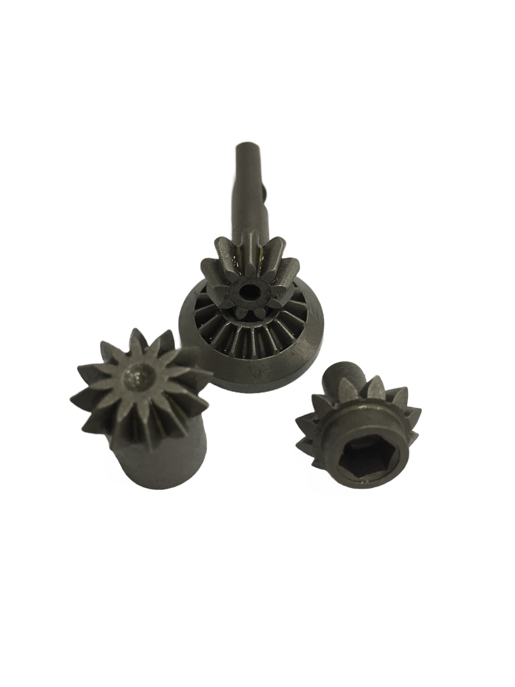
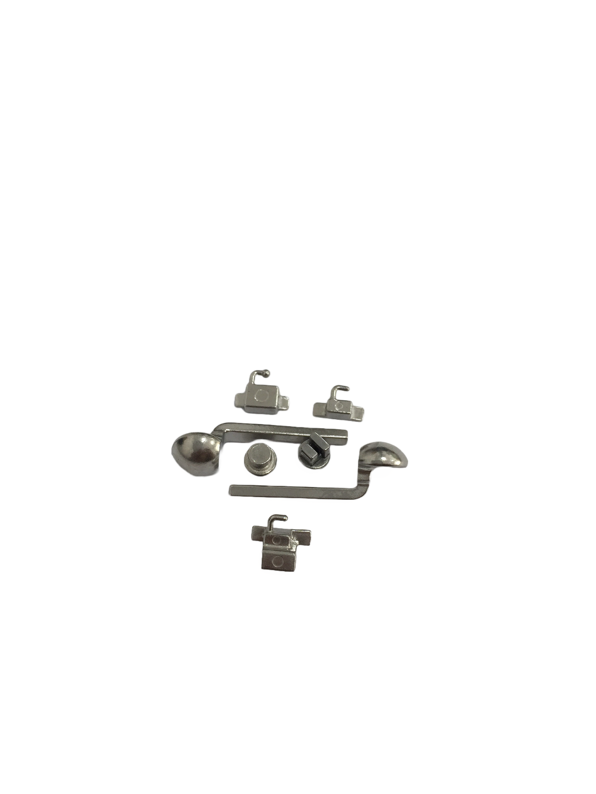

客製服務

服務介紹
基本認識
我們是專業的射出成型金屬零件製造公司，有別於傳統金屬製造方式，它融合粉末冶金、精密鑄造、壓鑄成型、機械加工等優點，並擁有高密度、高強度兼良好韌性的材質。
製程介紹
- 混鍊與造粒：混拌金屬粉末與結合劑，製造粒狀原料。
- 射出成型：開發客製成品模具，使用射出機成型毛胚。
- 脫脂與燒結：使用溶劑或真空脫脂爐去除結合劑，再以高溫燒結成型。
- 再加工處理：整形矯正、精密加工、熱處理、表面處理等。
客製流程介紹
從估價、樣品製作到量產製作，依照正式圖面檢討確認需求，分析加工製程與各種配合條件，再共同研討改善至滿意為止。
鎳合金鋼
- 鎳合金鋼
 鎳合金鋼
鎳合金鋼
鉻鉬合金鋼
 鉻鉬合金鋼 4140
鉻鉬合金鋼 4140
鉻鉬合金鋼 SCM435
鎳鉻鉬合金鋼
- 鎳鉻鉬合金鋼 8620

鎳鉻鉬合金鋼 8640
不鏽鋼
- 不鏽鋼 17-4PH

不鏽鋼 316L
高速鋼
- 高速鋼
其他材質
- 其他材質